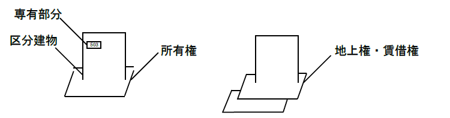
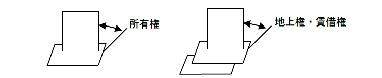
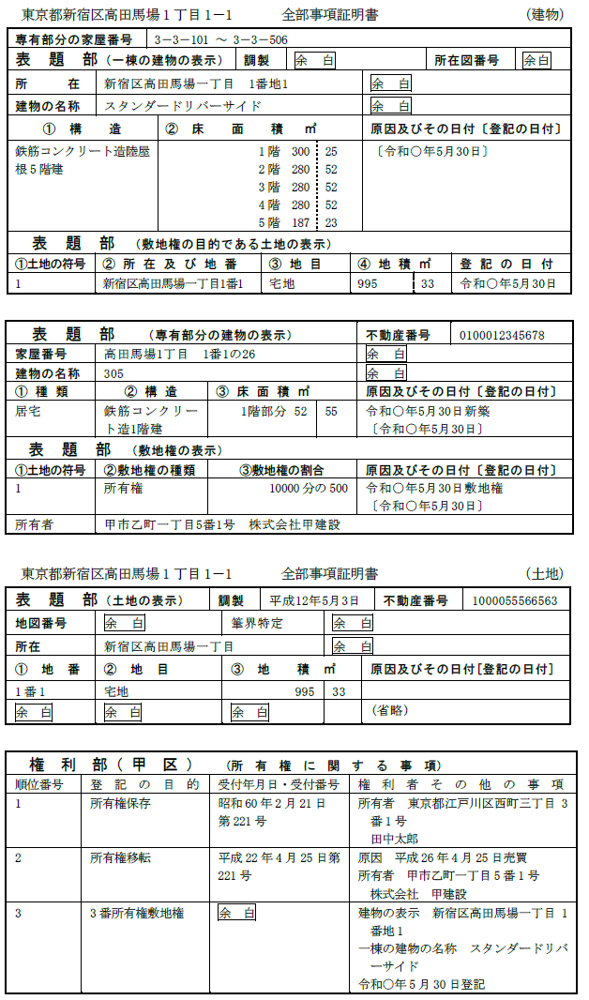
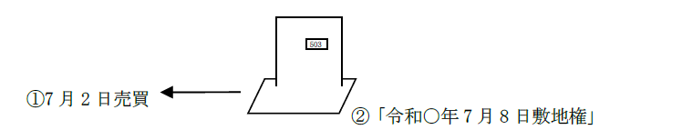
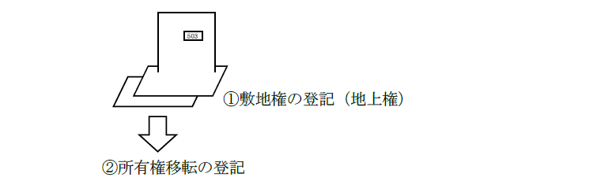
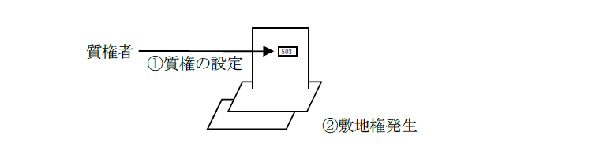
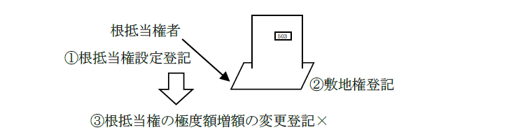

第１編 各 論
第８章 区分建物に関する登記
区分建物とは、一棟の建物の構造上区分された数個の部分で独立して住居、店舗、事務所又は倉庫その他建物としての用途に供することができるものであって建物の区分所有等に関する法律（区分所有法）2条3項に規定する専有部分であるものをいう（2条22号）。
ex.マンション
ここで、専有部分とは、区分所有権の目的である建物の部分をいう（区分所有法2条3項）。
ex.マンションの1室
そして、この専有部分を所有するための建物の敷地に関する権利を、敷地利用権という（区分所有法2条6項）。すなわち、建物が存立する土地の利用権のことである。この敷地利用権には、所有権、地上権、賃借権等がある。

1. 総説
敷地利用権が数人で有する所有権その他の権利である場合には、規約に別段の定めがある場合を除き、区分所有者は、その有する専有部分とその専有部分に係る敷地利用権とを分離して処分することができない（区分所有法22条1項）。

すなわち、敷地利用権は、区分建物に随伴するものとして、区分建物と敷地利用権の一体的処理が行われている。
この一体的処理を可能とするために、敷地利用権は区分建物の表題登記において登記され（44条1項9号）、これと共に敷地利用権の目的である土地の登記記録についても登記官の職権により、所有権、地上権その他の権利が敷地権である旨が登記される（46条）。
また、共用部分は原則として、区分所有者全員の共有に属する（区分所有法11条１項）。この共用部分の共有持分は原則として、専有部分と分離して処分することはできない（区分所有法15条2項）。そして、区分所有者がその専有部分を処分したときは、その効力は、当然にその区分所有者の有した共有持分にも及び、その共有持分も一緒に処分されたことになる（区分所有法15条1項）。
2. 敷地権
(1) 意義
敷地権とは、区分建物についての敷地利用権であって、区分所有者の有する専有部分と分離して処分することができないものであり、敷地権の登記がされているものをいう（44条1項9号）。
(2) 敷地権の登記
敷地権があるときは、建物の表示に関する登記（表題部の登記）に敷地権に関する登記をしなければならない（44条1項9号）。
そして、登記官は、表示に関する登記のうち、区分建物に関する敷地権について表題部に最初に登記をするときは、当該敷地権の目的である土地の登記記録について、職権で、当該登記記録中の所有権、地上権その他の権利が敷地権である旨の登記をしなければならない（46条）。なお、この敷地権である旨の登記は、敷地権の種類を問わず、地上権・賃借権も主登記でなされる。
(3) 敷地権の登記の効果
敷地権である旨の登記がされている区分建物については、区分所有者の有する専有部分と分離して処分することができない。
例えば、区分建物と敷地権を別々の人間が取得する旨の遺産分割協議は、一体性の原則に反するため、当該遺産分割協議に基づく所有権移転登記を申請することはできない。

敷地権付区分建物の場合、分離処分に該当する事由に基づいて登記をすることはできない。また、敷地権化される前の事由に基づく登記であっても、形式的に分離に該当する登記をすることもできない。
1. 所有権移転登記
(1) 敷地権化より前の事由に基づく登記
土地（規約敷地）について、その所有権が敷地権たる旨の登記がされる前に発生した事由に基づいて所有権移転登記を申請することはできない。敷地権化よりも前に発生した事由であり、本来分離処分にはあたらないが、敷地権化した現在の登記とは矛盾するためである。
したがって、これらの登記を申請する場合には、所有権移転登記をする前提として、敷地権の登記を抹消しなければならない。
【敷地権化前に発生した事由の例】
ⅰ 売買
ⅱ 取得時効が完成していた
ⅲ 相続
ⅳ 土地収用法による収用の裁決がされていた
ⅴ 処分禁止の仮処分の登記がされていた
(2) 敷地権化より後の事由に基づく登記
敷地権化より後に発生した事由に基づく所有権移転登記を申請することはできない。分離処分に該当するためである。
(3) 仮登記の場合
敷地権化より前に発生した事由に基づく所有権移転仮登記を申請することはできる。敷地権化より前に発生しており、本来分離処分にはあたらないためである。もっとも、敷地権である旨の登記が抹消された後でなければ、その本登記を申請することはできない。
敷地権付き区分建物には、当該建物のみの所有権の移転を登記原因とする所有権の登記又は当該建物のみを目的とする担保権に係る権利に関する登記をすることができないからである（73条3項本文）。
（具体例）
区分建物の登記記録の表題部の「敷地権の表示」欄中「登記原因及びその日付」欄に「令和○年7月8日敷地権」と記録されている場合において、所有権が敷地権たる旨の登記のされた土地のみについて、令和○年7月12日に、令和○年7月2日売買を原因とする所有権移転仮登記の申請をすることができる（73条2項ただし書）。

(4) 敷地権が所有権以外である場合
敷地権が所有権である場合、敷地権の移転の登記又をすることはできないが（73条3項本文）、敷地権が地上権である場合には、土地の所有権移転の登記をすることができる。この場合、分離処分が禁止されるのは敷地権である地上権と建物の専有部分であり、所有権は関係ないからである。

【建物又は土地のみを目的とする所有権移転登記の可否】
| 登記原因の日が敷地権の原因日付より前 | 登記原因の日が敷地権の原因日付より後 | |
| ①所有権移転登記 | × | × |
| ②所有権移転仮登記 | ○ | × |
2. 担保物権に関する登記
(1) 抵当権設定及び質権設定
(a) 敷地権化より前の事由に基づく登記
敷地権付区分建物について、敷地権が生じた日よりも前の日を登記原因の日とする抵当権設定の登記や質権設定の登記は、土地又は建物のみを目的とするものであっても、申請することができる（73条3項ただし書）。

(b) 敷地権化より後の事由に基づく登記
敷地権（所有権）が生じた日よりも後の日を登記原因の日とする抵当権設定の登記や質権設定の登記はすることができないのが原則である。
(c) 目的物
ⅰ 共有者は共用部分に抵当権を設定することはできない。共用部分の共有持分は、その有する専有部分の処分に従うためである（区分所有法15条1項）。
ⅱ 区分建物に敷地権の表示を登記した同一の一棟の建物に属する附属建物がある場合、その附属建物のみを目的とする抵当権の設定の登記を申請することはできない。
附属建物とは、表題登記がある建物に附属する建物であって当該表題登記がある建物と一体のものとして、1個の建物として登記されるものをいうからである（2条23号）。
(2) 追加設定
(a) 登記ができる場合
ⅰ 敷地権の登記後、区分建物のみを目的として設定されている抵当権の追加担保として、敷地のみを目的として、抵当権の追加設定登記の申請をすることができる。
ⅱ 敷地権発生前に土地を目的として抵当権設定の登記がされていた場合において、敷地権発生後の日を登記原因日付とする当該抵当権の被担保債権と同一の債権の担保として区分建物を目的として抵当権設定の登記の申請をすることができる（昭59.9.1民3.4675）。
ⅲ 抵当権の登記がされている敷地権付き区分建物に新たに敷地権が追加されたときは、当該敷地権を既存の専有部分及び敷地権を目的とする抵当権の追加担保とする設定契約をすることができる。既に敷地権付き区分建物に設定されている抵当権の追加担保として新たに敷地権とされた土地に設定するものであるので、かえって分離処分禁止の趣旨にかなっているといえるからである。
なお、この場合の当該追加担保の設定の登記は、当事者が共同で申請する（登研525P.210）。
(b) 登記ができない場合
累積式根抵当権は既存の根抵当権と別個の根抵当権とされているため、追加設定の登記は申請できない。
(3) 変更登記
ⅰ 土地のみを目的とする根抵当権設定の登記がされた後に土地に敷地権たる旨の登記がされた場合、土地が敷地権の目的となった後の登記原因日付による根抵当権の極度額増額の変更登記は申請することができない（登研444P.106）。根抵当権の極度額増額の変更登記は、その増額部分については、新たな根抵当権設定登記と同視できるからである。

ⅱ Ａ所有の甲土地の所有権を目的として根抵当権の設定登記がされた後に、甲土地の所有権を敷地権の目的とするＡ所有の乙区分建物の表示登記及び甲土地の所有権に敷地権たる旨の登記がされた場合、甲土地の根抵当権の被担保債権の範囲の変更登記は、その被担保債権の範囲の変更契約の日付が、甲土地が敷地権の目的となった日より前であるか、後であるかを問わず、申請することができる。
「処分」（区分所有法22条1項）とは、専有部分と敷地利用権を一体として処分する法律行為をいい、根抵当権の被担保債権の範囲の変更は、ここにいう処分に該当しないからである。債務者の変更も同様である。
(4) 特別の先取特権
(a) 敷地権化より後であっても登記ができる権利
敷地権付き区分建物の区分建物のみについて、敷地権が生じた日の後の日を登記原因の日とする不動産保存の先取特権保存の登記及び不動産工事の先取特権の保存の登記を申請することができる（昭58.11.10民3.6400）。
これらの権利は、その保存行為又は工事をした不動産について法律上当然に発生するものであるからである（民法326条、327条1項）。
(b) 登記ができない権利
所有権が敷地権である旨の登記がされている土地について、敷地権を目的とする不動産売買の先取特権の登記を申請することはできない。
敷地権のみを目的とする所有権移転登記は申請できないので（73条2項本文）、売買による所有権移転登記と同時に申請するべき不動産売買の先取特権の登記も申請できないからである（民法340条参照）。
(5) 一般の先取特権
敷地権である旨の登記がされている土地について、敷地権を目的とする一般の先取特権の保存の登記を申請することはできない（登研442P.84）。
一般の先取特権は、債務者の全財産の上に存するものなので、たとえ敷地権が生じる前であっても、区分建物とその敷地利用権の上に成立しているものだからである。
【建物又は土地のみを目的とする担保物権の登記の可否】
| 登記原因の日が敷地権の原因日付より前 | 登記原因の日が敷地権の原因日付より後 | |
| ①抵当権及び質権設定登記 | ○ | ×（追加設定など○の場合あり） |
| ②不動産保存及び不動産工事の先取特権保存の登記 | ○ | ○ |
| ③不動産売買の先取特権保存の登記 | × | × |
| ④一般の先取特権保存の登記 | × | × |
3. 用益権に関する登記
敷地権付区分建物の土地又は建物のみを目的とする賃借権などの用益権の設定登記は、敷地権化の前後を問わず、することができる。性質上、一方のみを目的とすることが当然だからである。
(1) 地上権設定の登記がされた後に、その地上権が敷地権となった場合であっても、その地上権設定の登記の抹消をすることができるか？
→ できる（不登規124条1項参照）。
賃借権でも同様である。
(2) 敷地権付区分建物について当該敷地権の目的である土地のみを目的とする区分地上権の設定の登記の申請は、当該敷地権が生じた後に当該区分地上権が設定された場合であっても、することができるか？
→ できる（昭58.11.10民3.6400）。もともと、一体的な処分を予定していないからである。地役権であっても同様である。
4. 処分の制限の登記
(1) 敷地権付区分建物についての処分禁止の仮処分の登記は、当該敷地権が生じた後に当該仮処分がされた場合であっても、当該区分建物のみ又は当該敷地権の目的である土地のみを目的とすることができるか？
→ できる（昭58.11.10民3.6400）。建物のみ、あるいは土地のみについて、権利の帰属につき争いが生じる可能性があるためである。
なお、土地（規約敷地）について、担保権の実行としての競売の開始決定がされた後、敷地権たる旨の登記がされた場合であっても、差押えの登記をすることができる。
(2) 区分建物に敷地権の表示の登記がされている場合に、その区分建物のみを目的としては、強制競売開始決定に係る差押えの登記を嘱託することができない。
区分建物のみを目的とする強制競売開始決定に係る差押えの登記を認めると、敷地権の表示の登記により一体化した財産が分離して処分されることになり、分離処分の禁止に該当するからである。
1. 敷地権付区分建物の登記の効力
原則として、敷地権付き区分建物について所有権又は担保権（一般先取特権、質権又は抵当権）に係る権利に関する登記は、敷地権である旨の登記をした土地の敷地権についてされた登記としての効力を有する（73条1項柱書本文）。
つまり、区分建物（ex.分譲マンションの1室）とこれに対応する敷地権（平たくいえば、底地の所有権、地上権又は賃借権の共有持分）の双方を目的とする権利（用益権ではありえない。）は、建物の登記記録にのみ登記され、土地について建物とは別に登記をしない。
もっとも、以下の例外がある。
①建物のみに関する旨の付記登記（不登規123条、156条）がされている登記
②性質上、建物のみを目的としていることが明らかな権利に関する登記
※建物のみを目的とする場合の登記申請
敷地権の表示を登記した建物について所有権に関する登記を申請する場合において、その登記の申請が建物のみについてするものであるときは、申請情報に敷地権の表示（不登令3条11号ヘ）を記載することを要しない（昭58.11.10民3.6400）。
2. 建物のみに関する旨の登記の要否
(1) 建物のみに関する旨の付記登記を要する場合
建物のみを目的として以下の登記をする場合には、登記官の職権で建物のみに関する旨の付記登記がなされる。これらの登記は、土地及び建物の双方に効力が生じることも、建物のみに効力が生じることもありえるからである。
(a) 敷地権化の日より前の日を登記原因日付とする所有権移転仮登記
(b) 敷地権化の日より前の日を登記原因日付とする抵当権設定及び質権設定登記（これらの仮登記も含む）
ⅰ 追加設定の場合
敷地権付区分建物について、抵当権の設定の登記がされた土地を敷 地として区分所有の建物が新築され、敷地権の登記がされた後に、当該抵当権の被担保債権と同一の債権を担保するために区分建物のみを目的として抵当権を設定した場合には、その登記に建物のみに関する旨の付記登記がされる（昭59.9.1民3.4675）。
この場合、申請する登記は敷地に設定された抵当権の追加設定の登記であるため、その登記の目的等は、当該敷地権にされた抵当権の登記の目的等と同一とはならないからである。
ⅱ 敷地権が賃借権である場合
賃借権を敷地権とする区分建物について設定された抵当権の場合には、建物のみに関する旨の付記登記はされない。賃借権を抵当権の目的とすることはできないため、賃借権を敷地権とする区分建物について設定された抵当権は、当然に建物のみを目的としているからである。
(2) 建物のみに関する旨の付記登記が不要な場合
建物のみを目的として以下の登記をする場合、建物のみに関する旨の付記登記はされない。性質上、建物のみにしか効力が生じないのが明らかであるため、わざわざ公示する必要がないからである。
(a) 賃借権設定登記（敷地権化の日の前後を問わない。また、仮登記も含む。）（昭58.11.10民3.6400）。
(b) 不動産保存及び不動産工事の先取特権保存の登記（敷地権化の日の前後を問わない）
【建物のみに関する旨の付記登記】
| 建物にされた登記 | 建物のみに関する旨の付記登記 |
| ①所有権移転仮登記 | される |
| ②抵当権及び質権設定登記 | される（※1） |
| ③不動産保存及び不動産工事の先取特権保存の登記 | されない（※2） |
| ④賃借権設定登記 | されない（※2） |
※1 敷地権が賃借権であるときは、区分建物のみにされた抵当権設定登記（抵当権設定仮登記）については、賃借権は抵当権の目的とはならないから、建物のみに関する付記登記はなされない。
※2 賃借権、特別の先取特権の登記は、性質上建物のみを目的としていることが明らかだからである。
1. 総説
敷地権付き区分建物に関する登記を申請する場合において、区分建物に関する登記であっても、その敷地権に効力が及ぶものであるときは、区分建物だけでなく、敷地権についても登録免許税が課されることになる。
2. 不動産の価格を課税標準とする登記
所有権移転の登記のように、登記が不動産の価額を課税標準とするものである場合には、区分建物の価額と敷地権の目的である土地の価額に敷地権の割合を掛けた価額の合計額を課税標準金額とし、それに所定の税率を掛けた額が登録免許税額となる。
ex.
相続を原因とする場合
敷地権が所有権 1000分の4
地上権・賃借権 専有部分1000分の4、敷地権1000分の2
売買を原因とする場合
敷地権が所有権 1000分の20
地上権・賃借権 専有部分1000分の20、敷地権1000分の10
なお、敷地権の目的が所有権以外のもの（地上権・賃借権）である場合には、区分建物の価額と敷地権の目的である土地の価額とを各々所定の税率を掛けた額の合計額が登録免許税額となる。
3. 不動産の個数を課税標準とする登記
登記名義人の住所移転の登記のように、登記が不動産の個数を課税標準とするものである場合には、区分建物の個数及び敷地権の目的である土地の個数が課税標準となる。
【具体例】
①敷地権の表示が登記された一棟の建物に属する専有部分の建物2個についての所有権の登記名義人が、住所移転を原因とする登記名義人住所変更登記を申請する場合において、敷地権の目的が1筆の土地の敷地利用権であるときの登録免許税の額は、いくらか？
→ 金3000円である。不動産の個数は、3個だからである。
専有部分の建物が1個、敷地権の目的が2筆の土地の敷地利用権であるときも、同様に3000円である。
②敷地権の表示が登記された一棟の建物に属する専有部分の建物1個に設定された抵当権の抹消登記を申請する場合において、敷地権の目的が1筆の土地の所有権（地上権）であるときの登録免許税の額は、いくらか？
→ 2000円である。抵当権設定登記の抹消登記の登録免許税は、不動産1個につき1000円である（登免法別表1.1.(15)）。
③同一の債権を担保するために、一筆の土地の所有権を敷地権とする一棟の建物に属する3個の区分建物に一の申請で抵当権を追加設定する場合の登録免許税の額は、いくらか？
→ 敷地が1つ、専有部分が3つであるので、追加設定の対象となる不動産は4つであり、6000円となる。共同根抵当権の追加設定の登記の登録免許税は、当該設定登記に係る不動産等に関する権利の件数1件につき1500円である（登免法13条2項）。
4. 不動産の表示
区分建物について建物の表示に関する登記又は建物についての権利に関する登記を申請するときは、次の事項を申請情報の内容とする。
①区分建物における、当該建物が属する一棟の建物の所在する市、区、郡、町、村、字及び土地の地番（不登令3条8号イ括弧書）
②家屋番号（不登令3条8号ロ）
③建物の種類、構造及び床面積（不登令3条8号ハ）
④建物の名称があるときは、その名称（不登令3条8号ニ）
⑤区分建物である附属建物にあっては、当該建物が属する一棟の建物の所在する市、区、郡、町、村、字及び土地の地番並びに種類、構造及び床面積（不登令3条8号ホ）
⑥区分建物である建物又は附属建物が属する一棟の建物の構造及び床面積（不登令3条8号ヘ）
※区分建物の名称を申請情報の内容とする場合は、一棟の建物の構造及び床面積は申請情報の内容としなくてもよい（不登令3条8号ヘ括弧書）。
⑦区分建物である建物又は附属建物が属する一棟の建物の名称があるときは、その名称（不登令3条8号ト）
⑧敷地権付き区分建物についての所有権、一般の先取特権、質権又は抵当権に関する登記（建物のみについて所有権等の登記ができる場合（73条3項ただし書）を除く）を申請するときは、次に掲げる事項も申請情報の内容とする（不登令3条11号ヘ）。
(1)敷地権の目的となる土地の所在する市、区、郡、町、村及び字並びに当該土地の地番、地目及び地積
(2)敷地権の種類及び割合